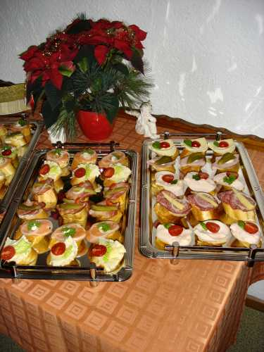
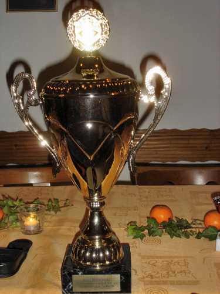
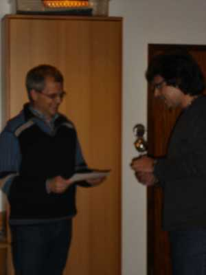
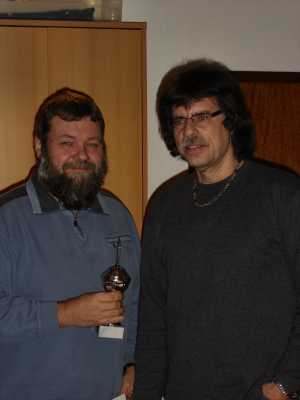
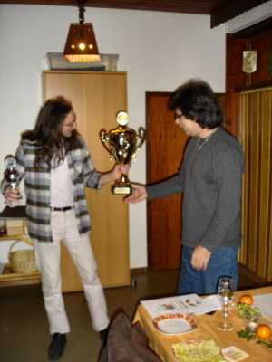
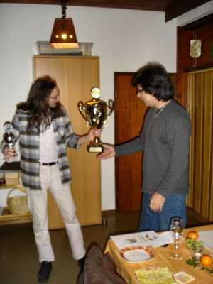
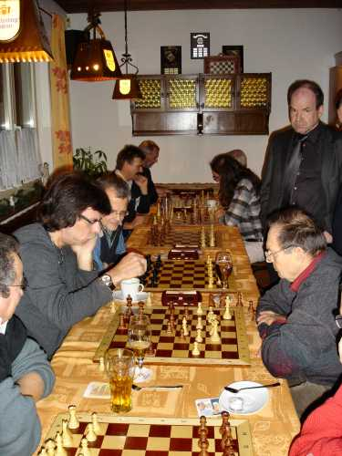
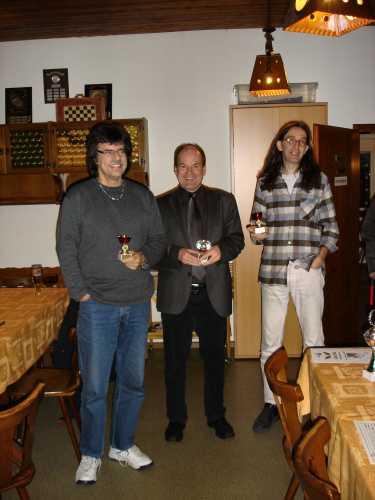

09.12.08
Ehrungen Sommerpokal
und
Nikolausblitzturnier

Und wieder mal war ein "Kleiner Imbiss" zu
Beginn Mittelpunkt des Geschehens.

Alle ließen es sich schmecken.

Danach wurde zum ersten Mal der neue Wanderpokal,
gestiftet von der SV-Versicherungsagentur Murg,
Bürgin & Partner, von unserem Spielleiter
Wolfgang Scheina
verliehen.
 
Thomas (links) war ob des 3. Platzes
ein
wenig unscharf. Bahni als 2. schon glücklicher.
 

Sieger Stefan erhielt den Turnier- und den Wanderpokal.

So sehen Sieger aus!

Anschließend ging es hurtig an die Bretter zum
Nikolausblitz.

Immer wieder wurde die Tabelle analysiert.

Gegen Schluss waren alle etwas entspannter.

Bernhard (Mitte) gewann knapp, gefolgt von
Wolfgang (links) und Stefan.
Hier noch die Turniertabelle:

Und so berichtete die Presse:
Badische Zeitung vom 11.12.08
(aus Layoutgründen auf 2 Spalten umgebrochen):
Auf Wunsch von Stefan wurde der Artikel
aus der Badischen Zeitung hier entfernt.